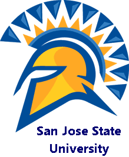

San Jose Event Notification Center
Create Event
Local Search
Where am I
Check In
Log Out

What's Happening at SJSU!
Welcome Student! Top Notifications for the Day: *Code Camp 2013 is here! Register now!!! * Bike@SJSU is a new bike service opened up near the Engg Building *